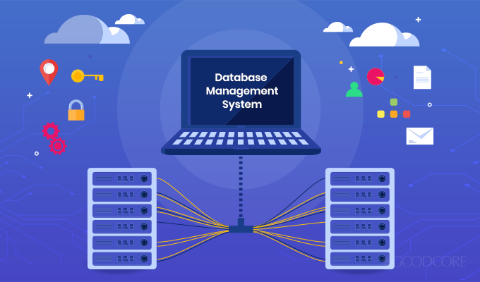
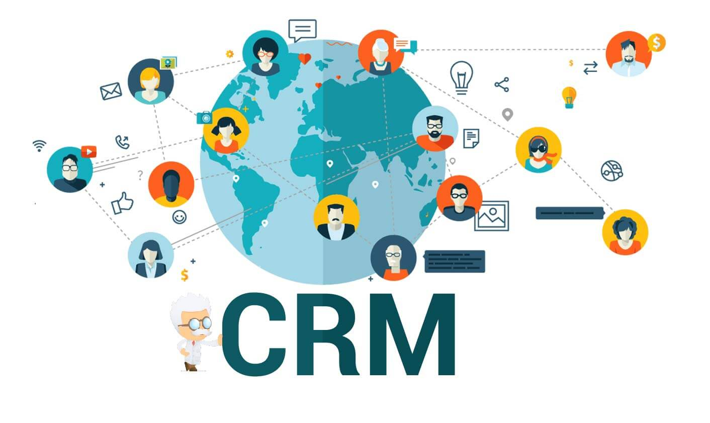

Projects

Database Developer
- Designed and developed Data Governance document (digital) to identify all policies.
- Created Data Governance process to manage Policies and Requirement.
- Created Data Governance process to manage Policies and Requirement.
- Database Security(Set Up Users, Roles, Views, Discretionary Privileges Matrixes, Dept-Roles-Tables/Views, Dept-Roles-Users
- Created interface to manage data dictionary and all validation reports using PowerBi.
- Automatic Implementation of all PG type declarations by stored Procedures, User Defined Functions, and Triggers.
Customer Relation Management (CRM) Designer/ Database Developer
- Tested and analyzed existing system for upgrade.
- Created System Request Form and Scope Statement.
- Created project schedule as per Agile methodology.
- Developed database using MSSQL (stored procedures, triggers, user-defined functions
- Created and presented the feasibility (operational, technical and economic) analysis report to the project manager.
Smart Fish Tank Developer

- Designed and developed the automatic fish feeder mechanism.
- Developed a system using raspberry pi where end user can feed the fish remotely .
- Created project schedule as per Agile methodology.
- Created a new product from concept to market as part of college class.
- Fit the camera surveillance system with live streaming on a private YouTube account where the end user can track and watch the fish remotely.